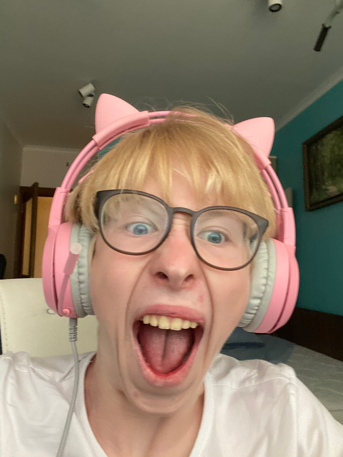

Артём Васенин Игоревич (укр. Артём Васенiн Iгорович;6 апреля 2006
года, Владимир, Россия) — биржевой трейдер,криптоинвестор,полиглот из Владимира,а также Заместитель Спикера Верховного Преизидиума исполнительного
высшего совета сервера NOVOVCHIK. А также калмунист,патриот и просто хороший человек.
Родился 6 апреля 2006 года во Владимире. В 2013 году поступил в МБОУ СОШ №10(так называемую парашу) и учиться по сей
день. Артём Васенин очень целеустремлённый человек. В конце 2019 года выиграл не один турнир по тэкхвандо. В 2022 году вложился в Bitcoin,а еще
черезе несколько лет в Kaspa. Жизнь Артёма Васенина наполнена красками и неожиданносятми.
В конце одиннадцатого класса планирует поступить в МИСИС на Дауна.
Почему компьютеры котикам не нравяца..
Отношения со сверстниками.
В 2015 году Артём Васенiн Iгорович познакомился с Ахуенным пацаном Макакой экей мнк экей камаз экей кульмаш экей
камыш
экей ковш экей скуфшин так же в 2019 году Артём Васенiн Iгорович познакомился с крутым пацаном - Григорашем и с этими
личностями он дружит по сей день. Эти пачаны имеют собственное самое охуенное объединение людей - ЧВК ДЕГЕНЕРАТЫ. Но не все так радужно как кажется на первый взгляд ведь осенью 2020 года при
многочисленных срачах происходящих в Легендарной Тройки авторитет нейтрального ромы борзого поднялся, тем не менее MNKKK и
GRIGORAS
избегали его ,в мае 2021 года loudviper утверждал ,что Starichok_PG его лучший друг ,но после неприятного
разговора в
социальной сети discord между loudviper и cаввой была задета честь и достоинство так называемой ipselonya
реакция
от
starichokPG была незамедлительна блять, он хотел расхуярить мурло loudviper, но ему мешал закон рф в итоге его
общение с
Романом Борзовым прекратилось и не продолжалось с тех пор. Ходят слухи что после этого куколдом стал уже Роман Борзов.
Подобная ситуация произошла с неким туристом под ником poligraf где на игре в мафию он показал неприличный
жест V
не
малоизвестной в этой статье ipselonya после чего starichokPG начал разборку с ним в итоге poligraf
публично извинялся на
коленях перед ipselonya.
В целом Артём васенин поддерживает хорошие отношения со многими одноклассниками,поддерживает их,предлагает взаимопомощь.
Род деятельности
Артем Васенин занимается самыми разными вещами. Начиная от изготовки скинчиков на АВП по PUBG,
заканчивая криптоинвестициями и обещаниями что он будет учиться. Стоит отметить,что Васенин входит в совет Верховного Преизидиума совета
дискорд сервера "NOVOVCHIK",чего удостоены лишь 2 человека помимон него. То есть он входит в 3.75E-8% людей на планете!
Также,Артём Васенин очень большой фанат военной тематики
и всего что с этим связано. Профессионально обучен стрелять по бандеровцам ОБЖшником лично.
Участник ЧВК Дегенераты."Лови Бандера."
Игровая карьера
NSFW TEAM(2021)
War Thunder(2000h+, 2018-??)
Dota 2(Легендарные мать его фингеры и связочки от шамана и ульт зевса)
Terraria(2020)
Тёмыч e-girl.

Личная жизнь
В конце 2021 попал в рабство Екатерине более известной под псевдонимом ipselonya.
Проблемы с законом
Нападение на техно вечеринку, также неоднократный подрыв свинофремы и непосредственная стрельба в ней. Летом 2023 был
совершён подрыв скибиди туалета - в его направлении был выпущен снаряд
Super Cobra. Зимой 2024 года нарушил воздушное пространство РФ контейнером отправленным в полет к хуям кошачьам.
Должен был сесть в тюоьму
за вождение без прав,но побегом скрылся с места преступления и начал строительство землянки(потайное убежище).
Велосипеда зарабатывал деньги на том что продавал паленые товары с вайлдберис скуфам на камазах работал грузчиком и
перевозил стафчик употреблял такие запрещенные вещества как фенибут прыгал с парашюта на днр. Скандальный случай: в
2024 году была поставлена 2 по русскому языку за неподобающие поведение.
Интересные фактики об Артёме Васенине
Два котика на одной пикче.
Был подвержен сексуальному насилию со стороны Александра Попова. Клёвый лежак бро.
Вел себя как быдло ебаное и дал пизды малолете за это получил от ipselonya.
Подножка от Владимира Григораша в 4 классе.
Музыкальные предпочтения: (пушной члерносокинсы кровосток молодежвыбираеткосмос,черносотенцы,)
Отлично владеет англ языком произносит coal как кал.
Ну что вот Тёмыч тебе и 18, а я думаю как закончить писать этот сайт глядя на часы(3:32). Очень ценю тебя бро. Я уверен,что в будующем
все будет просто шикос. Думаю это лето будет просто незабываемом нах. Но тем не менее тебе уже 18 и ты не забывай,что так можно уже и забухать
и в армию попасть так шо осторожно. Остальное думаю ты услышишь,когда мы встретимся лично. С днём рождения!!!